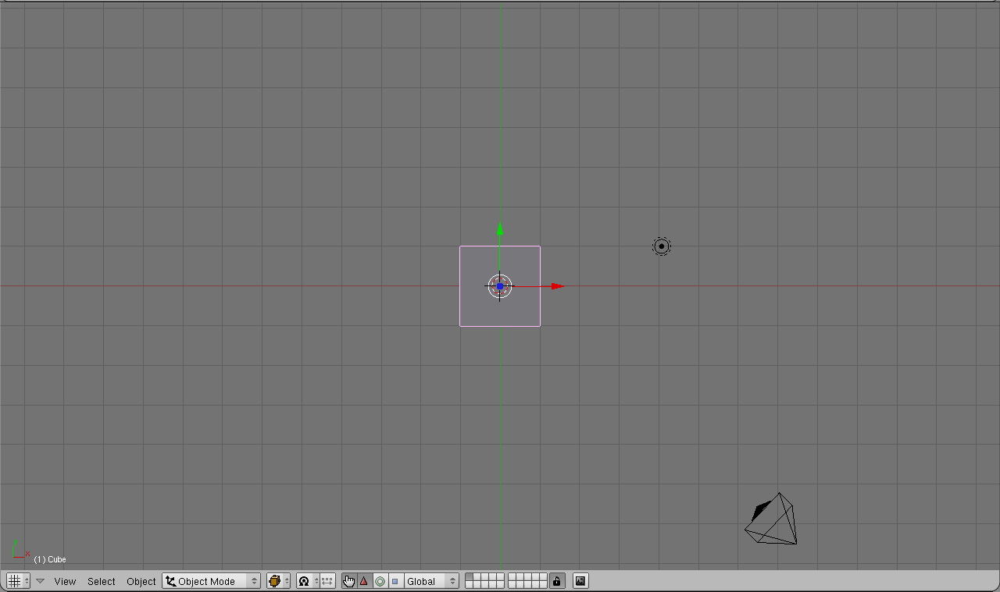
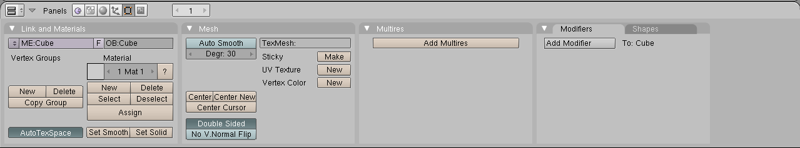

Введение в Blender. Урок 2
Методическая разработка урока. Теоретическая часть
Blender – это пакет для создания трёхмерной компьютерной графики, анимации и интерактивных приложений.
1. Организация окна по умолчанию
Запустив Blender, вы увидите окно, состоящее из трёх дочерних окон: меню (а), окна 3D вида (б) и панели кнопок (в).
а

б

в
Это вариант по-умолчанию. На самом деле окон может быть больше, они могут располагаться по иному и иметь другие размеры. Однако пока оставим все как есть и сосредоточимся на окне 3D вида.
Теперь запомним следующую особенность: многие команды в Blender предпочтительно отдавать с клавиатуры. При этом следует помнить, что курсор мыши должен находиться именно в том дочернем окне, где планируется произвести изменения.
Рассматривая окно 3D вида, следует выделить в нем две «части»: меню (г) и непосредственно само окно вида.
г
2. Объекты сцены: куб, лампа и камера
В 3D окне можно наблюдать две пересекающиеся в центре линии (красную и зелёную) – оси координат (X и Y – их обозначения есть в нижнем левом углу 3D-окна), 3D-курсор (не путать с курсором мыши!), квадрат (на самом деле являющийся кубом), лампу и камеру (д).
д
Куб - это отображаемый объект. Возможно он вам не понадобится и тогда его следует удалить. Лампа служит источником света (без неё конечное изображение было бы чёрным), а камера необходима для отображения конечного изображения. С помощью камеры мы видим изображение под тем или иным углом. Все вместе (в данном случае, куб, лампа, камера) формируют сцену – представление события.
3. Рендеринг
Сцена, созданная в программе Blender – это далеко еще не изображение. Однако, зачастую такие программы как Blender используются для создания 3D-графики. Чтобы получить из сцены графический файл необходимо «отрендерить» файл.
Формирование изображения по созданной сцене называется рендерингом (отрисовкой). В Blender, чтобы посмотреть конечное изображение можно нажать F12. Отображаемая сторона, удалённость и др. на получившейся картинки зависят от того, где размещена и как повёрнута камера.
4. Навигация в окне просмотра с помощью клавиатуры
Если после запуска Blender вы нажмёте F12 и посмотрите на получившееся изображение, то, возможно, будете озадачены тем, что оно не совпадает с видом сцены (тем, что видим в 3D-окне). На самом деле все правильно, сцену вы видите сверху (так установлено по-умолчанию), а изображение получаете как вид из камеры (судя по всему камера "смотрит" сбоку).
Чтобы изменять вид в окне просмотра чаще всего используют клавиши NumPad (дополнительные цифры и знаки в правой части клавиатуры). Для того, чтобы установить в 3D-окне вид из камеры следует нажать 0 (ноль). Для возврата в вид сверху – 7.
Назначение других клавиш NumPad:
1 – вид спереди;
3 – вид справа;
2, 4, 6, 8 – поворот сцены;
5 – перспектива (повторное нажатие возвращает обратно);
«.» и Enter – изменение масштаба относительно выбранного объекта;
«+» и «-» - изменение масштаба сцены
5. Навигация в окне просмотра c помощью мыши
Изменять вид окна просмотра можно не только с помощью клавиатуры, но и используя мышь:
прокрутка колеса мыши меняет масштаб;
движение мыши при нажатом колесе поворачивает сцену;
движение мыши при нажатом колесе + Shift передвигает сцену.
Примечание: курсор мыши должен находиться в 3D-окне (а то передвинете что-нибудь другое).
6. Выделение объектов
Итак, первоначально на сцене присутствуют три объекта (куб, камера и лампа). Их можно передвигать, менять угол наклона и др., но для начала неплохо бы научиться выделять объекты (т.е. указывать компьютеру, с чем именно мы соизволим работать). Выделение объекта в Blender осуществляется щелчком правой кнопки мыши по нему. Контур выделенного объекта становится розовым (хотя не обязательно розовым — все зависит от выбранной темы).
Чтобы выделить несколько объектов, надо щёлкать по ним по очереди правой кнопкой мыши при зажатой клавише Shift.
Нажатие клавиши A приводит к сбрасыванию выделения с любых объектов (если что-нибудь было выделено), а следующее нажатие — к выделению всех объектов.
7. Изменение позиции, размера, и угла поворота объектов
Изменять местоположение, размер и разворот объектов можно как с помощью клавиатуры, так и с помощью кнопок, расположенных в меню 3D окна.
Например, чтобы изменить размер куба по всем осям с помощью клавиатуры необходимо выполнить следующую последовательность действий:
выделить куб, если он не выделен;
- 3 – вид справа;
- расположить курсор мыши в 3D-окне в соответствие со следующей закономерностью: чем ближе курсор к центру объекта, тем больше будет производить изменения малейшее движение мыши; чем дальше курсор от центра объекта, тем слабее будет влияние движения мыши.
- нажать клавишу S (не зажимать!);
- перемещать курсор мыши, пока объект не достигнет необходимого размера;
- щёлкнуть левой клавишей мыши, чтобы согласиться с изменениями, или правой – чтобы отказаться от них.
Если при перемещении курсора (п.4) зажать клавишу Ctrl, то любое изменение будет пошаговым (на определённую величину).
Для изменении местоположения объекта на сцене используется клавиша G, для поворота – R. К сведению, клавиши S, G и R не случайно выбраны для описанных действий: S – первая буква английского слова size (размер), G – go (движение), а R – rotation (вращение).
Если изменения необходимо выполнить только по одной оси, то следом после клавиши S или др. следует нажать X или Y или Z, в зависимости от того, по какой оси требуется изменить объект.
Кроме того, существуют специальные кнопки в меню 3D окна, включающие соответствующие режимы изменения объекта (е).

е
После включения любой из этих трёх кнопок у выделенного объекта появляются маркеры. Для внесения изменений следует навести курсор мышь на маркер, зажать левую кнопку и перемешать мышь.
8. Сохранение и открытие файлов
Сохранение и открытие файлов в Blender не сильно отличается от этих действий в других программах. Однако окна здесь выглядят достаточно специфично. Главное, что следует запомнить: в Blender при закрытии программы не выводится диалоговое окно с предложением сохранить файл. Поэтому об этом следует позаботиться заранее, иначе можно безвозвратно утратить только что созданное произведение.
Вопросы
- Какие задачи можно решать в программе Blender?
- Для чего предназначены клавиши 2, 4, 6 и 8 NumPad'а?
- Какая клавиша позволяет выделить всё или отменить выделение всего?